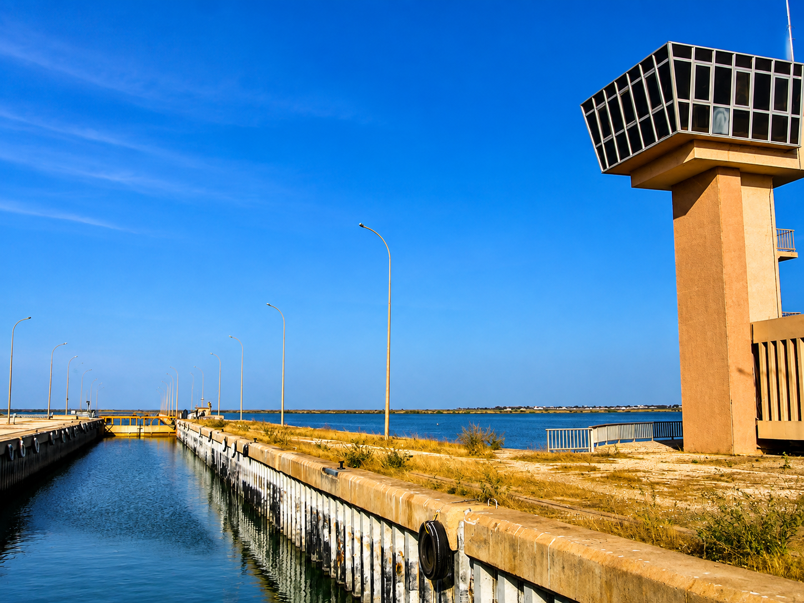
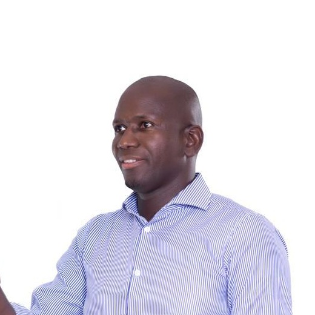

01
Un projet local
Un projet centré sur les réalités de Diama, de ses villages et de ses quartiers.
Découvrir le projet →
Diama – Saint-Louis
Rassembler les forces vives de la commune et transformer les potentialités de Diama en opportunités concrètes pour les habitants.
Diama Bu Bess est un projet porté par une ambition : faire entrer la commune de Diama dans une nouvelle ère de développement, de responsabilité et d'espoir.

Notre ambition
La jeunesse, les femmes, l'agriculture, l'éducation, la santé, l'emploi, les infrastructures, la culture et la diaspora doivent contribuer ensemble au développement local.
Voir les grands axes →Notre conviction
La transformation du Sénégal doit aussi se concrétiser dans les territoires, au plus près des populations et de leurs aspirations.
Un projet centré sur les réalités de Diama, de ses villages et de ses quartiers.
Découvrir le projet →Une démarche locale inscrite en cohérence avec la dynamique de KIIRAAY – Les Patriotes Républicains.
Comprendre notre ancrage →Transformer les potentialités du territoire en emplois, services, formation et meilleures conditions de vie.
Voir les grands axes →« Une nouvelle ère pour Diama » — Ensemble, pour une Diama plus forte, plus juste et tournée vers l'avenir.